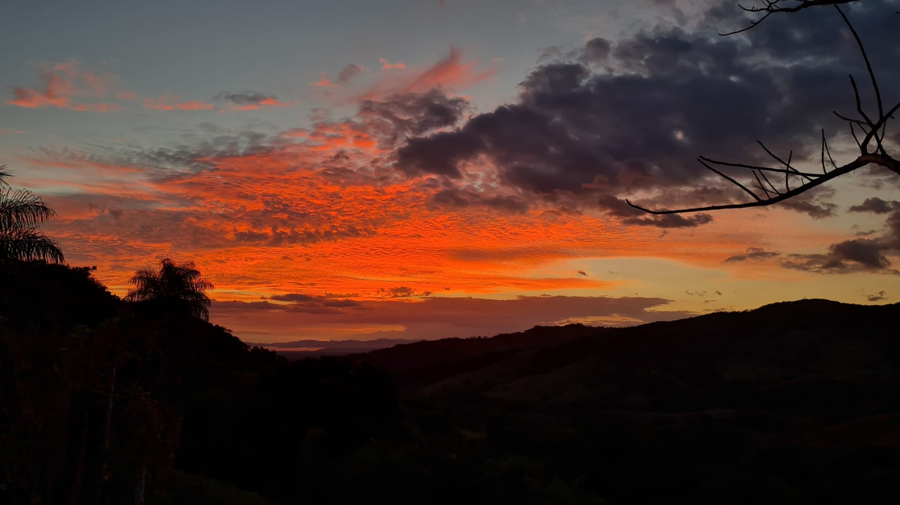
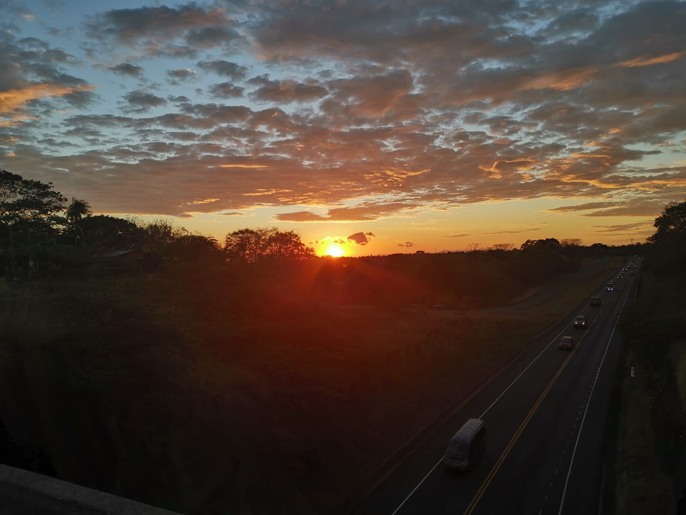
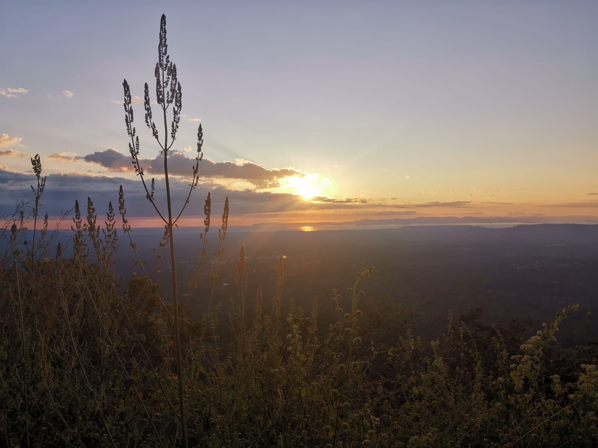

Pasatiempos:
Actualmente mis pasatiempos consisten en jugar videojuegos, ver series o películas y ver uno que otro video de YouTube. También me gusta salir a andar en bici o caminar en las tardes o mañanas, ya que, aquí en Orotina, donde vivo, los atardeceres y amaneceres cuando no llueve son súper lindos.
Aquí unos ejemplos:


